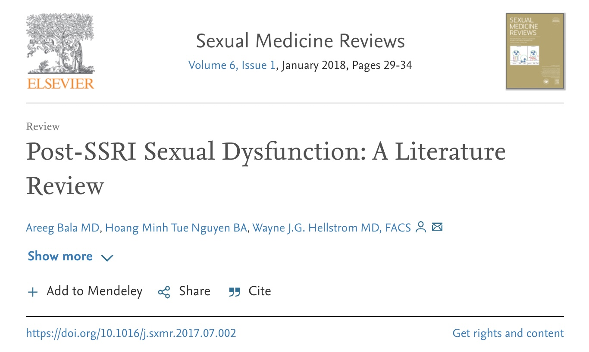

Domande frequenti sulla disfunzione sessuale post-SSRI
Cosa è la disfunzione sessuale post-SSRI?
La disfunzione sessuale post-SSRI (PSSD, dall'inglese post-SSRI sexual dysfunction) è una sindrome caratterizzata da disfunzioni sessuali che persistono per un tempo indefinito dopo aver interrotto farmaci serotoninergici, come ad esempio gli inibitori selettivi della ricaptazione della serotonina (SSRI), largamente utilizzati nei disturbi depressivi e ansiosi.
È ben noto che l'assunzione di farmaci serotoninergici possa causare difunzioni sessuali in un'alta percentuale di persone, ma è meno noto che queste disfunzioni possano rimanere anche dopo la sospensione del farmaco.
Sindromi simili si hanno anche con altri farmaci quali la finasteride (sindrome post-finasteride, PFS) e l'isotretinoina (sindrome post-accutane, PAS).
Quali sono i sintomi della PSSD?
Uno dei sintomi considerati necessari per parlare di PSSD è una ridotta sensazione tattile e/o erogena a livello genitale (anestesia genitale).
Possono essere presenti disfunzioni a livello di tutte le fasi della funzione sessuale (desiderio, eccitazione, orgasmo). Gli orgasmi possono essere meno piacevoli di prima (anedonia orgasmica) o assenti (anorgasmia).
La sindrome può presentare anche sintomi di altro tipo, che prima di assumere il farmaco non erano presenti, come ad esempio l'appiattimento emotivo (in inglese emotional blunting).
Nota bene: come in tutte le sindromi, il profilo qualitativo e quantitativo dei sintomi varia da persona a persona, cioè non tutte le persone presentano gli stessi sintomi e con la stessa intensità.
In che senso "anestesia genitale"?
L'espressione "anestesia genitale", riportata anche in articoli scientifici sulla PSSD, indica una perdita di sensazione in area genitale. Tuttavia, in molti casi di PSSD, questa riduzione di sensibilità non è totale come il termine "anestesia" potrebbe far supporre (sebbene descriva in modo verosimile alcuni casi di PSSD). Essa si può presentare con vari livelli di gravità e si può quindi parlare più in generale di ipoestesia genitale.
La perdita di sensibilità in area genitale si può riferire:
alla sensazione erogena, cioè sessuale: spesso chi soffre di PSSD riferisce che toccarsi i genitali è diventato come toccarsi una qualsiasi altra parte del corpo.
E/o
alla sensazione tattile nei genitali, che nei casi più gravi può essere compromessa al punto tale da non percepire più il tocco sulla pelle, il passaggio di un asciugamano, o la temperatura dell'acqua.
La ridotta sensibilità genitale è il primo criterio necessario per la diagnosi di PSSD stabilito dai ricercatori. [1]
È rilevante notare come la riduzione di sensibilità genitale degli SSRI sia utilizzato in andrologia nei casi di eiaculazione precoce.
Quali sono i farmaci che possono causare PSSD?
Tutti i farmaci inibitori della ricaptazione della serotonina (SRI). Gli SRI includono:
- gli inibitori selettivi della ricaptazione della serotonina (SSRI), quali citalopram, escitalopram, fluoxetina, fluvoxamina, paroxetina, sertralina;
- gli inibitori della ricaptazione della serotonina-norepinefrina (SNRI), Desvenlafaxine (Pristiq) Duloxetine (Cymbalta), Levomilnacipran (Fetzima), Venlafaxine (Effexor XR)
- gli antidepressivi triciclici SRI, come amitriptilina, clomipramina, nortriptilina;
- gli antistaminici SRI;
- gli antibiotici tetraciclinici come la doxiciclina;
- gli analgesici come il tramadolo.
Ma non è la depressione a causare disfunzioni sessuali?
- il profilo delle disfunzioni sessuali da SSRI è diverso da quello della depressione (come anche è differenziabile la sindrome apatica da antidepressivo rispetto a quella che si ha nella depressione), in particolare è stato rilevato che l'anestesia genitale sembra essere un sintomo distintivo delle disfunzioni sessuali da SSRI
- le disfunzioni sessuali possono rimanere anche nei casi in cui la depressione non è più presente (la stessa cosa si osserva con la sindrome di apatia da antidepressivi)
- in studi preclinici, dopo la sospensione di paroxetina è stato osservato un impatto negativo sui livelli di neurosteroidi
- disfunzioni sessuali persistenti sono state osservate in volontari sani che hanno assunto farmaci SRI
La colpa è dell'uso scorretto dei farmaci? Se seguo le indicazioni del medico sono al sicuro?
Purtroppo no. Può capitare anche con un uso corretto sotto controllo medico.
Una credenza molto diffusa è che i problemi degli antidepressivi derivino solo da un uso scorretto, ad esempio troppo prolungato, dei farmaci, o ad una loro brusca interruzione. Frasi di questo tipo sono comuni:
- solo un uso prolungato può essere pericoloso
- succede solo a chi interrompe l'assunzione di colpo
- basta assumere il farmaco sotto controllo medico
Anche se è vero che un uso prolungato, una dose troppo alta, o una brusca interruzione di antidepressivo possono aumentare il rischio di certe problematiche (come ad esempio la sindrome da sospensione), e quindi è meglio utilizzare farmaci alla dose più bassa e per il minor tempo possibile, sospendendoli gradualmente, tutto ciò non garantisce di non incorrere nella PSSD.
Si sa che la PSSD può verificarsi anche dopo l'assunzione di poche dosi o addirittura una sola,[2] e che la sospensione graduale dell'antidepressivo (tapering) non previene il problema.
Quanto è frequente la PSSD?
Non è noto.
Spesso si legge, anche da parte delle stesse persone sofferenti, che la PSSD sarebbe una sindrome rara o molto rara, che capita a pochi sfortunati. In realtà ad oggi non è possibile affermare che la PSSD sia rara o frequente (e in che misura), perché questo aspetto non è mai stato adeguatamente studiato. Sulla base dei dati disponibili, si ritiene che forme moderatamente lievi di PSSD possano essere piuttosto comuni. Per approfondire bene questo problema, per nulla banale, si consiglia l’articolo dedicato.
È possibile che i sintomi della PSSD si presentino solo dopo la sospensione?
Si possono avere diversi scenari:
- sintomi presenti durante l’assunzione del farmaco, ma che scompaiono completamente dopo la sospensione del farmaco → nessuna PSSD
- sintomi non presenti durante l’assunzione del farmaco, ma che compaiono per la prima volta dopo la sospensione del farmaco → PSSD
- sintomi presenti durante l’assunzione del farmaco, che si attenuano dopo la sospensione del farmaco → PSSD
- sintomi presenti durante l’assunzione del farmaco e che si aggravano dopo la sospensione del farmaco → PSSD
Cosa posso fare in concreto per sostenere la ricerca?
È possibile donare per sostenere la ricerca sulla PSSD da parte dell’Università di Milano, a questo indirizzo.
Chi c’è dietro il sito postssrisyndrome.org?
Il sito è gestito da pazienti PSSD italiani. Tra di noi ci sono anche persone con formazione in ambito biomedico e psicologico. Alcuni di noi collaborano a vario titolo con centri di ricerca sulla PSSD.
Riferimenti
[1] Healy, D., et al. "Diagnostic criteria for enduring sexual dysfunction after treatment with antidepressants, finasteride and isotretinoin." The International Journal of Risk & Safety in Medicine 33.1 (2022): 65-76. [2] Bala A, Nguyen HMT, Hellstrom WJG. "Post-SSRI Sexual Dysfunction: A Literature Review." Sex Med Rev. 2018 Jan;6(1):29-34. doi: 10.1016/j.sxmr.2017.07.002. Epub 2017 Aug 1. Review. [PubMed] 